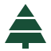
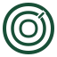
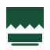

Cuatro direcciones de identidad para el dashboard.
01 Pino modular

Control
Operativo
Tres niveles de madera forman un pino. Es la opción más directa, limpia y reconocible.
Símbolo a tamaño de navegación
02 Veta de tronco

Control
Operativo
Un corte de tronco con anillos. Comunica origen, madera y trazabilidad.
Símbolo a tamaño de navegación
03 Sierra y tablón

Control
Operativo
La hoja de corte y la pieza terminada resumen el trabajo del aserradero.
Símbolo a tamaño de navegación
04 Pino emblema
El pino dentro de un sello geométrico da más presencia al icono de la app.
Símbolo a tamaño de navegación